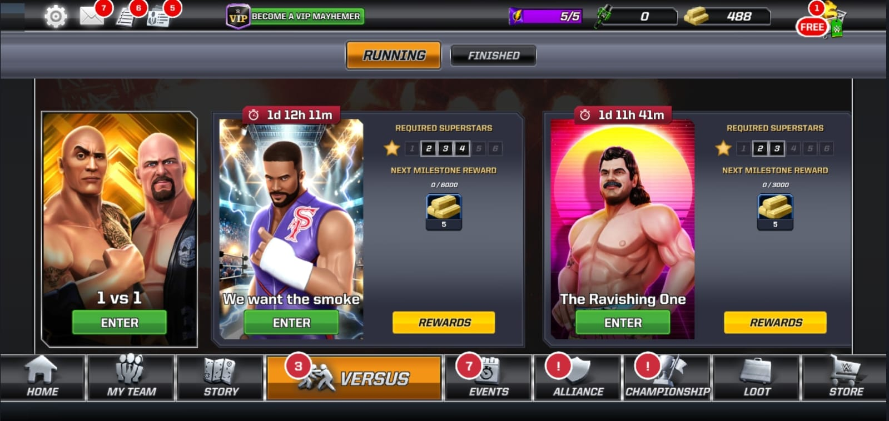
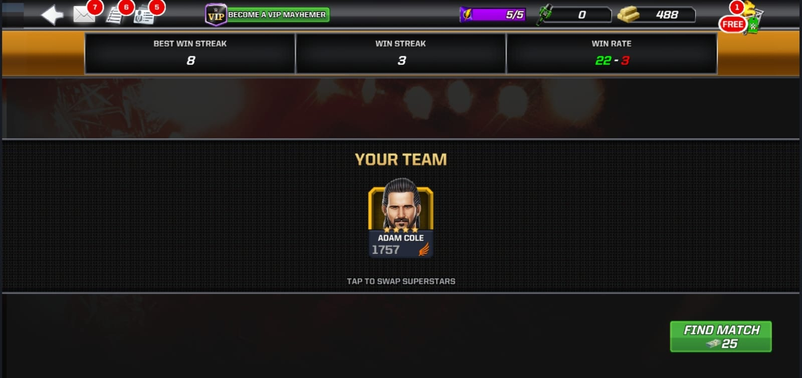
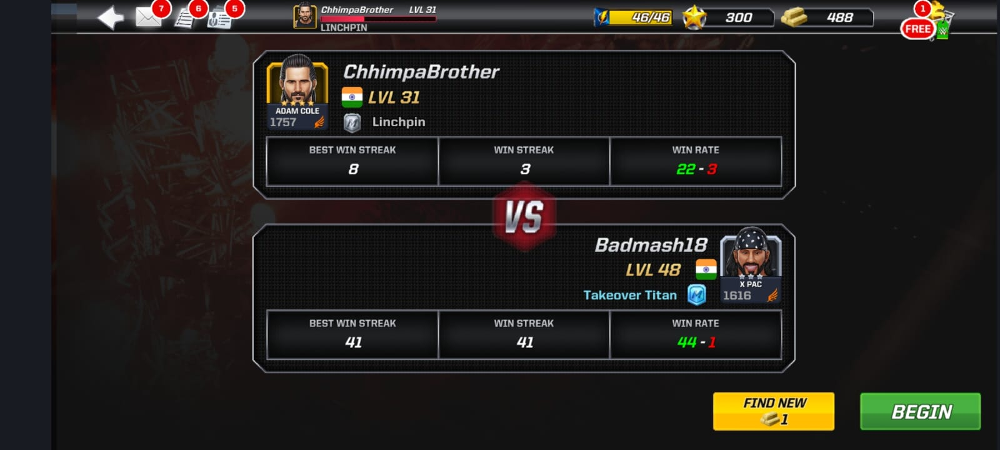
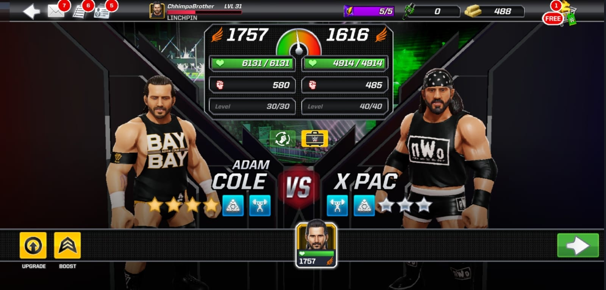
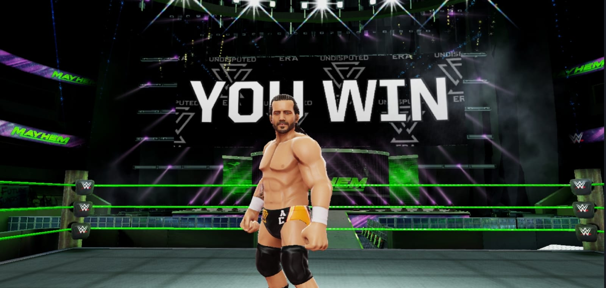

VERSUS MODE
Event Cards & Requirements
The Versus Mode includes multiple rotating events, each with different superstar requirements. Players can enter events using superstars of specific star levels to earn milestone rewards such as gold, keys, and loot boxes.
Your Team Selection
Before entering a match, players select their team. The team’s overall power determines their competitiveness in Versus Mode. You can tap to swap superstars and build your strongest lineup.
Win Streak & Statistics
Players can track their win streak, best win streak, and win rate. This adds a competitive element, motivating players to keep improving and climbing in Versus Mode.
Opponent Matchmaking
The Versus Mode matches players against opponents with similar power levels. Player profile and stats are displayed during matchmaking to provide a fair and intense competition.
Battle Preview
Before the fight begins, players can compare stats such as health, damage, and abilities between their superstar and the opponent’s. This helps in deciding whether to boost or upgrade before starting the match.
Victory Screen
After winning, players see an exciting animated victory screen featuring their superstar. Winning increases your streak, helps progress through milestones, and grants rewards.
